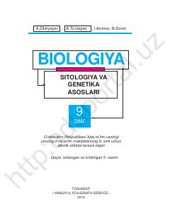

BS9-sinf uchun sitologiya va genetika asoslariga bag'ishlangan biologiya darsligi.
Mazkur darslik umumiy o'rta ta'lim maktablarining 9-sinfi uchun mo'ljallangan bo'lib, sitologiya va genetika asoslari, tirik organizmlarning o'ziga xos xususiyatlari hamda biologik qonuniyatlarni o'rgatadi. Yangi davlat ta'lim standartlari asosida tayyorlangan bo'lib, ilmiy kashfiyotlar, laboratoriya mashg'ulotlari va savol-topshiriqlarni o'z ichiga oladi.